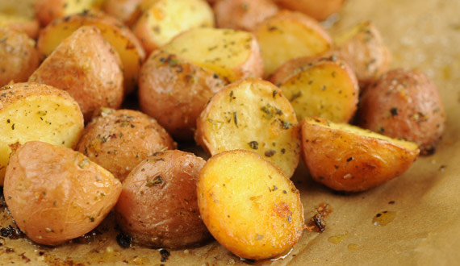

Potatoes

This baked potatoes are extremely easy to make
This potato recipe can be used for when you´re having your friends over to watch a game , or even for when you´re in a diet
- 350 g of Small Potatoes
- 3 tablespoons of olive oil
- Salt
- Garlic Powder
- Pepper
- Onion Powder
- First we chop the potatoes in small squares
- In a medium pot we put enough water to cover all the potatoes and we bring it to boil, we are going to have to wait for about 6-8 minutes
- Once our potatoes are cooked , we put them in a medium bowl so we can season them , first we are going to add the olive oil , and then we are going to add the salt , peper, garlic powder and onion powder,
- When everything is mixed we are going to put our potatoes in a baking tray, we are going put our potatoes in the oven at 170 Celsius Degrees for about 10 min or until golden brown